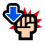

위대한 항로 난이도 패턴
[속] VS 콜론 (보스)
Stage 1:
선제 행동:
참격형, 타격형, 박식형 캐릭터의 VS 효과의 게이지를 5 단축
참격형, 타격형, 박식형 캐릭터의 슈퍼 체인지 효과를 5 단축
참격형, 타격형, 박식형 캐릭터의 필살기 턴을 5턴 단축
도주
Stage 2:
초기 상태: 콜론
99턴 동안 지연 무효
99턴 동안 일반 공격 이외의 데미지 1
선제 행동:
5턴 동안 필살기 봉쇄
선원의 [공백][힘][기][속][심][지][G][고기][연][폭탄] 슬롯을 [마비] 슬롯으로 변환
격파 시 행동:
도주
Stage 3:
초기 상태: 콜론
99턴 동안 지연 무효
99턴 동안 일반 공격 이외의 데미지 1
약점 타입: 타격형
선제 행동:
5턴 동안 상단의 선장효과 무효
6턴 동안 받는 데미지를 70% 감소
좌측은(는) 받는 데미지 1.2배의 기절
2턴 동안 [힘][기][속][심][지] 슬롯을 [불리] 슬롯으로 취급
[속] VS 몽키 D. 루피 (난입)
Stage 1:
선제 행동:
힘 속성, 기 속성, 심 속성 속성의 VS 효과의 게이지를 5 단축
힘 속성, 기 속성, 심 속성 속성의 슈퍼 체인지 효과를 5 단축
힘 속성, 기 속성, 심 속성 캐릭터의 필살기 턴을 5턴 단축
도주
Stage 2:
초기 상태: 우솝
99턴 동안 상태이상 무효
99턴 동안 일반 공격 이외의 데미지 1
선제 행동:

2턴 동안 공격력 70% 감소
98턴 동안 서서히 데미지가 증가하는 독 데미지
1턴 동안 슬롯 고정
1턴 동안 hit 배리어(10hit)
[공백][힘][기][속][심][지][G][고기][연][폭탄] 슬롯을 [독] 슬롯으로 변환
Stage 3:
초기 상태: 몽키 D. 루피
99턴 동안 상태이상 무효
99턴 동안 일반 공격 이외의 데미지 1
약점 타입: 타격형
선제 행동:
1턴 동안 탭 타이밍 배리어(GOOD 2회)
1턴 동안 [힘][기][속][심][지][고기][연] 슬롯으로 공격했을 때 데미지 70% 감소
5턴 동안 필살기 봉쇄
3턴 동안 일당의 공격력을 1.1배